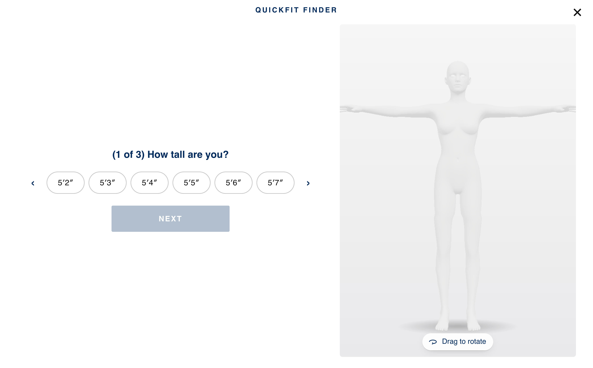
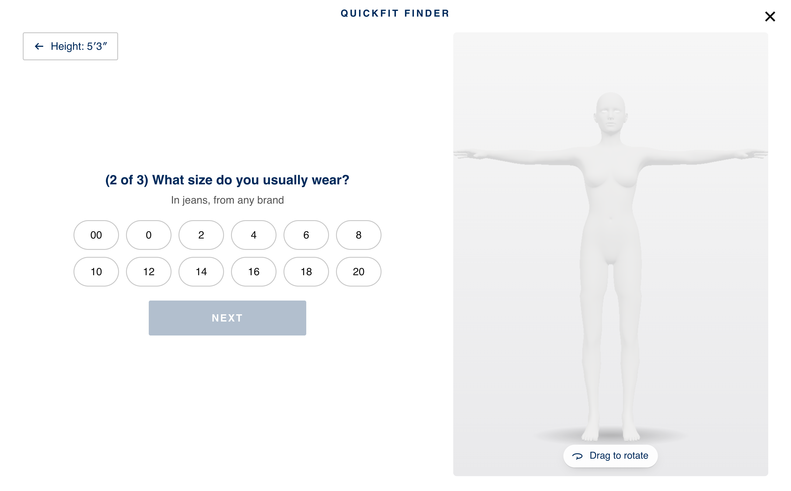
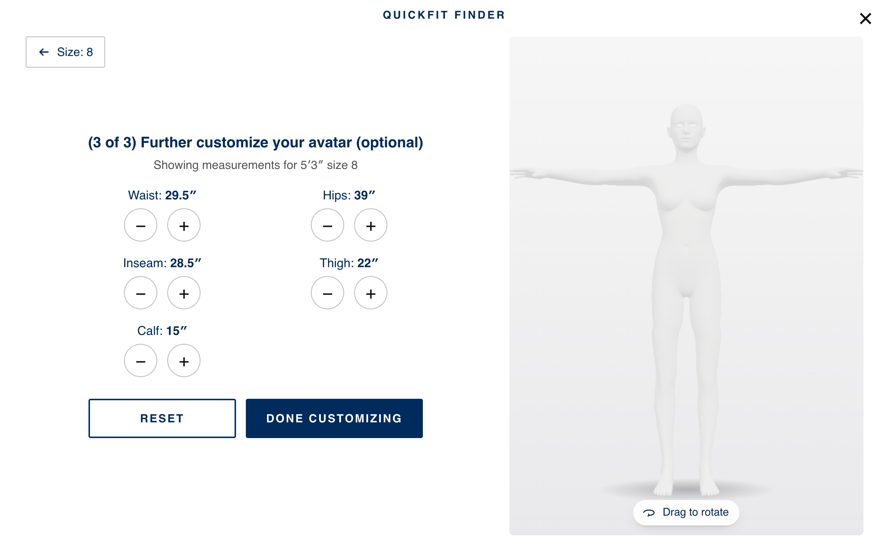
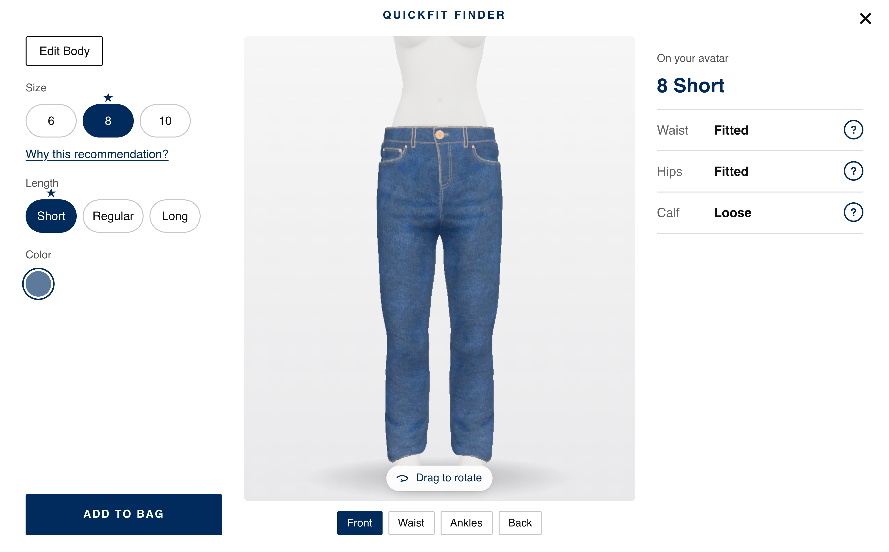

1Baseline input(1 of 3) How tall are you?

2Fit calibration(2 of 3) What size do you usually wear?

3Optional tuning(3 of 3) Further customize your avatar

4Explainable fitA size on the avatar, with fit by zone